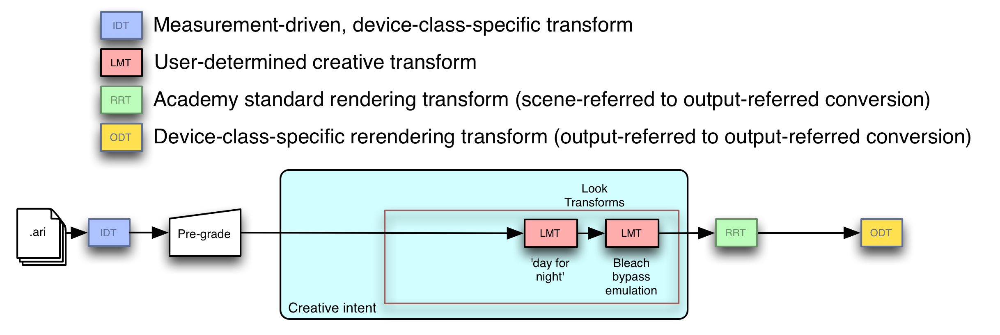

Design, Integration and Use of ACES Look Transforms¶
Introduction¶
The ACES Look Transform imparts an image-wide creative ‘look’ to the appearance of ACES images. It is a component of the ACES viewing pipeline that precedes the selected ACES Output Transform. Look Transforms exist because some color manipulations can be complex, and having a pre-set for a complex look makes a colorist’s work more efficient. In addition, emulation of traditional color reproduction methods such as the projection of film print requires complex interactions of colors that are better modeled in a systematic transform than by requiring a colorist to match ‘by eye.’
The Look Transform is intended to supplement – not replace – a colorist’s traditional tools for grading and manipulating images. There are three places in the viewing pipeline where production staff modifies the look of the image from the default rendering of ACES data:
-
Adjustments to the exposure levels or white balance of a particular shot are often done as a ‘pre-grade.’
-
A colorist applies a grade to further refine and modify the color appearance to achieve the creative look of a shot.
-
Finally the Look Transform provides an additional, optional tool for the colorist to manipulate ACES images and preview the result.
Thus the pre-grade and the Look Transform bracket the colorist’s grading work.
While the colorist’s grading tools allow manipulation of either the overall image or of selected pieces of the image, the Look Transform is designed to work only across the overall image.
As part of the ACES viewing pipeline, the Look Transform takes ACES color-encoded values as inputs, and outputs modified ACES-encoded values that may then be immediately processed by an Output Transform (in this case, the Output Transform appropriate for the colorist's display).
Outside an immediate ACES viewing pipeline, the Look Transform's output can additionally (or alternatively) be saved, creating a new ACES image container file that has ‘baked in’ the effect of the Look Transform on the original image. When this new file with ‘baked in’ changes is viewed using the standard ACES viewing pipeline, the creative intent reflected in the prior application of the Look Transform to the original will be preserved.
Look Transforms can be reused across multiple shots or even across an entire production. They are separate from an individual shot’s ‘grade’ or a particular vendor’s color grade file.
Key characteristics of a well-designed Look Transform are portability across applications, and preservation (to the extent that is both possible and practical) of ACES’s high dynamic range and wide color gamut while still imparting a designed, creative, target look.
Scope¶
This document describes the use of ACES Look Transforms for ACES-based color management. It provides several use cases for Look Transforms, defines how Look Transforms are expressed and are carried along with clips and projects, discusses Look Transform use in the context of a workflow employing ACES-based color management, and concludes with design guidelines for Look Transforms. This document also describes optimal use of Look Transforms and suggests several ways in which a Look Transform may be designed to support flexible mastering and archiving workflows.
References¶
The following standards, specifications, articles, presentations, and texts are referenced in this text:
- ST 2065-1:2021 - SMPTE Standard - Academy Color Encoding Specification (ACES), Society of Motion Picture and Television Engineers, New York, US, Standard, 2021.
- Academy S-2013-001, ACESproxy - An Integer Log Encoding of ACES Data
- Academy S-2014-003, ACEScc – A Logarithmic Encoding of ACES Data for use within Color Grading Systems
- Academy S-2014-006, A Common File Format for Look-Up Tables
- Academy S-2019-001, ACES Metadata File (AMF)
- [ASC Color Decision List (ASC CDL) Transfer Functions and Interchange Syntax, ASC-CDL Release 1.2]
Look Transform Use Cases¶
Two styles of image modification are common in post-production: interactive modification, either across the entire frame or in isolated regions of interest, and a preset systematic modification across the entire frame. The interactive image modification is termed ‘grading.’ The ACES term for preset systematic, full-frame image modification is ‘look modification.’ Look modification is performed using a Look Transform.
Note
In early development of the ACES system, Look Transforms were abbreviated LMT (from 'Look Modification Transform'). Occasionally the 'LMT' acronym will still be used although the preferred terminology is 'ACES Look Transform' or simply 'Look Transform'.
Emulation of photochemical processing¶
Though modern grading systems are very powerful, some whole-frame color transformations are too complex for even a skilled colorist to accomplish using grading system controls. Often the complexity arises when the creative intent is to simulate, for frames captured with digital cinema cameras, the nonlinear color and exposure relationships used in film laboratory photochemical processing, especially nonstandard photochemical processing. Examples of such color transformations include:
- ‘Bleach Bypass’ emulation: modification of image color values to achieve a unique desaturated appearance mimicking projection of a print that had skipped a normal laboratory bleaching step
- Technicolor 3-strip emulation: modification of image color values to achieve a saturated, higher-contrast appearance mimicking projection of a print from Technicolor's imbibition dye transfer process (c. 1938)
- Kodak Vision 3 print film emulation: modification of image color values to achieve a reproduction of the relationship between scene exposure values and projected film imagery resulting from the use of Kodaks latest film stocks
Figure 1 illustrates how a colorist could prepend one or more emulation Look Transforms to the RRT (which itself precedes a selected ODT), so that his or her time could be spent on sequence, shot and/or region-specific color requests from the client. The grade modifies the image first, followed by the process emulation provided by the Look Transform.

Systematic Color Correction (and application of ASC CDL)¶
The Look Transform takes as input an image in the ACES color space and yields a modified image that is still in the ACES color space. As a consequence, Look Transforms can be ‘chained’ together, one after another. Figure 2 shows a grading workflow where, prior to applying the ‘Kodak Vision 3 emulation’ Look Transform described above, the colorist applies an ‘ASC CDL’ Look Transform - very likely one whose parameter values were chosen by the cinematographer on-set to modify the default ‘look’ of emulated Kodak Vision 3 stock.

Note
The values of the ASC CDL in this case are only valid in the context of the selected ‘Kodak Vision 3 emulation’ Look Transform. If this Look Transform were removed, the ASC CDL values would no longer be valid.
Note that the ASC CDL Look Transform incorporates a conversion from ACES to ACEScc before the ASC CDL operations will be applied, and likewise incorporates a conversion from ACEScc to ACES after the ASC CDL operations have been applied. This ‘wrapping’ of ASC CDL operations is a key capability available in the Academy/ASC Common LUT Format (CLF).
Trim Pass Grading¶
Content today is delivered across a wide range of output devices, each of which has their own color space and characteristic brightness. Creative adjustments to the look of shots are often needed to enhance the content’s appearance beyond the original creative intent. The client might desire to accentuate the difference between the results of the viewing pipeline for theatrical exhibition, the results of the viewing pipeline appropriate for home video and the results of the viewing pipeline appropriate for mobile streaming. This could be done by having three workflows that differed only in that the first had no Look Transform ‘accentuating’ the image for any nonstandard viewing environment, the second had a Look Transform just prior to the application of an Output Transform designated as appropriate for home video viewing, and the third had a Look Transform just prior to the application of an Output Transform designated as appropriate for viewing with content streamed to mobile devices, as shown in Figure 3.

Flexible pre-sets for creative modifications¶
Separation of grading and Look Transform(s) allows for a production to make significant changes in creative decisions that affect the entire frame equally, without requiring the colorist to start from scratch, or ideally without even requiring a trim pass. For example, the client might start a production shooting ‘day for night’ and use a Look Transform to accomplish this result (Figure 4).

A change in creative direction (say, after a test screening) might place the captured action two hours earlier, so ‘day for night’ might become ‘day for dusk’. Since the Look Transform is separate from the grade, the change may be made without requiring lengthy and expensive colorist intervention. A new Look Transform is simply swapped into the old Look Transform’s place (Figure 5).

Permanent Color Modification (Archival)¶
The workflows above all show a ‘transient’ processing of image file to displayed output, with the display being a calibrated grading monitor or projector. It is also completely valid and correct to archive the input to the RRT as an ACES container file, ‘baking in’ the grade and any Look Transform application(s), as shown in Figure 6.

A person who retrieves an ACES file need not know about the grades and Look Transform(s) applied to produce the desired creative result; by virtue of being an ACES file, the image ‘speaks for itself’ when the RRT and a selected ODT are applied.
It is extremely important that the Look Transform authors preserve as much of the dynamic range of the Look Transforms input ACES RGB relative exposure values as is possible. This provides the maximum amount of latitude for a colorist grading through the Look Transform. It also preserves the maximum amount of grading latitude for someone who later retrieves stored ACES container files created by baking in the effect of the Look Transform to the graded ACES images, when remastering for a radically different display or viewing environment (e.g. for grading on a higher-dynamic-range display than previously available). While full preservation of dynamic range and gamut is almost never possible, when faced with an engineering decision in which all other considerations are equal, the Look Transform author should choose the option that retains more of the Look Transform input's dynamic range and color gamut.
Preserving the integrity of the ACES RGB relative exposure values representing the scene means more than just not clipping highlight luminances or very deep shadow tones. It also means avoiding severe distortions of the distributions of ACES values, such as the distortion caused by a strong ‘gamma’ operation, e.g. by a very large or very small value for one or more CDL ‘power’ parameters.
Because Look Transforms are customizable and unique, and because it is essential to maintain the portability and archivability of an ACES project, it is always necessary to preserve the Look Transforms within any project where they are used.
Note
If a production wishes to preserve maximum flexibility for later remastering, it should archive the original ACES images, any clip-level metadata-bearing container encapsulating the original image files, any IDT(s), any pre-grading adjustments (see the following ‘Look Transforms and pre-grading for Visual Effects’ section), any project-wide and shot-specific grading parameters, and the Look Transform (that is, the set of all Look Transforms employed to achieve the creative result, in their proper sequence).
Portability¶
Look Transforms are expressed and transported using the Common LUT Format (also known as the Academy/ASC Common LUT Format or CLF).
The building blocks of an Look Transform include basic arithmetical operations, simple matrix application, 1D LUTs and 3D LUTs. Straightforward color transforms can often be expressed analytically using the first three of these building blocks. More complex (and typically empirically derived) Look Transforms may be conveyed as 3D LUTs. The Common LUT Format was chosen because it can express, in a portable encoding, all of the above-mentioned operations and LUTs.
Note
Using the floating point ACES RGB relative exposure values directly as 1D LUT indices requires a more complex lookup mechanism than found in traditional 1D LUT implementations. The Common LUT Format supports this type of lookup by using the halfDomain attribute of the LUT1D process node. See the Common LUT Format specification for more information.
Look Transforms and pre-grading for Visual Effects¶
In some cases, color corrections may be created prior to the colorist session in a scene-balancing ‘pre-grade.’ This allows for all shots in a sequence to share identical Look Transforms ‘downstream’ in the color modification pipeline. A motivating case would be a long sequence of daylight shots with varying color temperature. An example of this workflow, with two illustrations, is shown below. The first illustration shows what might happen at a visual effects facility that receives a number of shots that will be edited together to make up a sequence.

When the visual effects are complete, the frames supplied to the colorist have both the pre-grade and the visual effect(s) ‘baked in.’ The Look Transform is not ‘baked in’ to this imagery, since it must be applied after the grade, but is instead carried as metadata, and is referenced by the ACES Metadata File.

Specification¶
Inputs¶
The inputs to a Look Transform are ACES2065 RGB relative exposure values.
Outputs¶
The outputs of a Look Transform are ACES2065 RGB relative exposure values.
Working Space¶
The internal working space of a Look Transform is unrestricted. A Look Transform may transform its inputs internally into a non-ACES2065 space and perform color operations there, as long as it transforms the results of those back to ACES2065 before yielding them as outputs.
Syntax¶
Look Transforms are specified in Common LUT Format XML.
Transport¶
Look Transform metadata is carried in the ACES Metadata File . Multiple Look Transforms are referenced in the lookTransform element and are applied in the order in which they are referenced.
Workflow Integration¶
Application to entire image, pixel by individual pixel¶
As with all other ACES transforms, Look Transforms are applied across the entire image, and are not applied to any subset of the image. Similarly, as with all other ACES transforms, the outputs of the Look Transform depend solely on its inputs, with no contribution from neighboring regions of the image.
Ubiquity¶
The Look Transform is a key transform in the ACES system, and must be supported in any system component supporting ACES workflows that allows for image alteration. (An example of an ACES system component not allowing image alteration would be a display that interpreted its inputs as being ACESproxy values.) The ability to specify, record, transport and/or apply Look Transform(s) can be present in almost any component of an ACES-based workflow, including applications for converting native camera output to ACES imagery, on-set grading and dailies tools, color correctors, displays and CG tools.
Optimizations¶
When there are multiple Look Transforms making up a Look Transform, the hardware or software implementing the ACES viewing pipeline may optimize the application of the Look Transform by combining the Look Transforms into a single LUT; it may also combine this Look Transform LUT with the RRT and a selected ODT.
Composite transform sampling using a 3D LUT¶
Applications may also send a lattice of sample values through some set of adjacent transforms (anything from two or more adjacent Look Transforms in the Look Transform, to the full concatenation of Look Transform plus RRT and a selected ODT) to derive a single 3D LUT.
Artifact-free processing across the large range of ACES RGB relative exposure values requires shaper LUTs before and after the 3D LUT to minimize interpolation error.
Retention¶
Look Transforms need to be saved with every clip or project, and loaded automatically into the user’s application so that the creatively established Look Transform is maintained at every step of production and post-production. Every Look Transform contains, as part of its description, an ACES Transform Identifier. To maintain portability of Look Transforms, the metadata identifying them – their ACES Transform Identifiers – must be included within the ACES Metadata File, and the order in which they are referenced in the ACES Metadata File is the order in which they should be applied.
Nondestructive preview of displayed image appearance¶
Look Transforms are one of several types of transform applied to either camera-specific files in proprietary or standard format that have been converted into ACES by an IDT, or to ACES files in OpenEXR containers. In the most general of cases, the input image data will be processed first by zero or more pre-grades, then by the grading transform, then by zero or more Look Transforms, then by the RRT, then by a selected ODT, and then displayed to the user. This most general case is shown in Figure 9.

The syntax and semantics of Look Transforms are given in the Specification section above. The syntax and semantics of pre-grading and grading operations are outside the scope of this document; indeed, they are outside the scope of the ACES project itself.
Archival of ACES imagery with and without baked in grading and/or Look Transform application¶
Every archived ACES image has an implied associated displayed image, namely, the result of processing that archived ACES image with the RRT and the ODT that was used when creative approval was given. Because of this it is critical that the selected ODT (including all relevant versioning information) be archived alongside any archived ACES imagery, whether or not that ACES imagery is the product of ‘baking in’ grades and/or the application of one or more Look Transforms making up a Look Transform.
Since many grading operations and Look Transforms may reduce the color volume in the original image to a smaller color volume that is then delivered to the RRT and a selected ODT, productions wishing to ‘future-proof’ their assets should store the original ACES files, along with all pre-grading information, grading information, the ordered set of Look Transforms that make up the Look Transform and the ODT that was selected at the time of creative approval.
Example
A Look Transform applying ASC CDL would be an example of such a color-volume-reducing transformation, as ASC CDL is applied in the ACEScc color space, a smaller color space than ACES.
Design¶
Simple Look Transforms are the best. A Look Transform should be as simple as possible while still achieving the desired modification to the displayed image.
Overall principles¶
Support high dynamic range¶
ACES image data can represent luminances from far below the detectability threshold of the human visual system all the way up to luminances causing physical pain – the maximum ACES luminance is about 65,505 times as bright as a diffuse white object in the scene. A Look Transform should endeavor to preserve this luminance range as much as is possible.
Handle a wide color gamut¶
Creation of ACES imagery by CGI renderers, or by grading operations on live-action capture, can create ACES image values containing colors not found in nature or colors on the spectral locus that only became readily producible with the advent of the laser. A Look Transform should handle as wide a color gamut as is possible and practical, and avoid imposing arbitrary limits on hue or saturation.
Use high-level constructs to enable optimizations¶
The Common LUT Format allows the ACES system release to provide a tool chest of predefined operations. Look Transform authors should use these rather than writing their own for several reasons:
- They were developed as part of the ACES project, have well-defined semantics, and are tested.
- They obey the two principles above (support high dynamic range and handle the full color gamut) to the maximum extent possible.
- Future releases might introduce performance or quality optimizations that depend on recognition of predefined operations.
Analytic and empirical approaches¶
Broadly speaking, Look Transforms can be characterized as either analytic or empirical.
Analytic Look Transforms¶
Analytic Look Transforms usually have concise mathematical definitions. The prime example of an analytic Look Transform is probably the ACES-system-provided Look Transform that applies ASC CDL to ACES data. Another (hypothetical) analytic Look Transform might be one that changes saturation with luminance at certain hue angles. Analytic Look Transforms are typically expressed as a set of ordered mathematical operations or 1D LUT lookup operations on colors or color component values.
Empirical Look Transforms¶
Empirical Look Transforms usually are derived by sampling the results of some other color reproduction process, such as normal or special film processing. Empirical Look Transforms are often provided as 3D LUTs that record a regular subsampling of the results of such processes.
A challenge arises when using ACES values to index the 3D LUT, as ACES values are radiometrically linear and have a very wide floating point range. The Common LUT Format provides for forward and inverse ‘shaper LUT’ operations that (when wrapped around an appropriately constructed 3D LUT) effectively solve this problem. Implementers should review the LUT1D section of the Common LUT Format specification.
Importing ‘looks’ from non-ACES-color-managed workflows¶
Importing a ‘look file’ or LUT from a color system not defined using ACES can be quite difficult. Such look files contain transforms to be applied in color spaces other than ACES or the ACES working space, often presume the relationship between scene and encoded values is encoded with some (possibly proprietary) power function or log function, and likely are designed to supply a display device with code values directly rather than hand off the image to an ACES Output Transform.
For all of these reasons, it is typically better (and often much more efficient over the course of a production) to establish new Look Transforms within a workflow that is built around ACES-based color management rather than to try and mathematically translate a ‘look file’ or LUT intended for use with a workflow based on some other color management system.